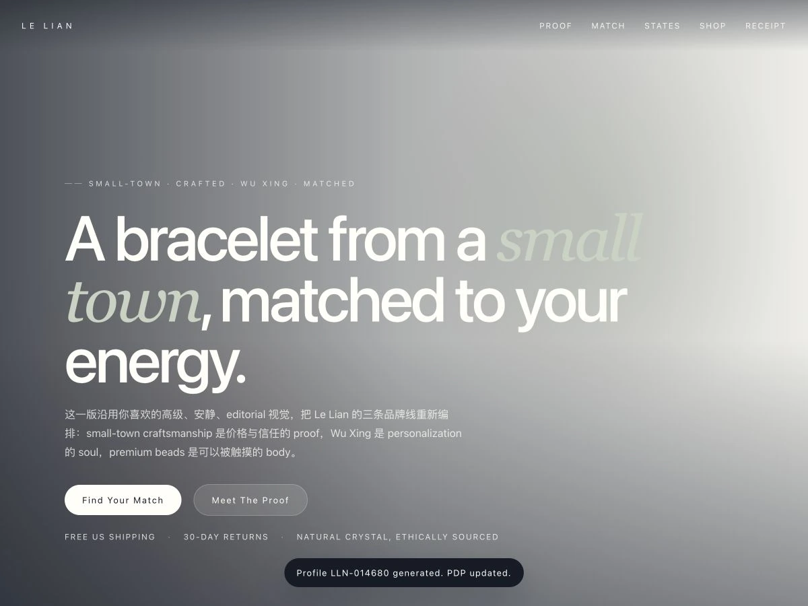

金 · 木 · 水 · 火 · 土
COMMERCE UX · DESIGN TO CODE
整理 48 款手串，并借助 Codex 完成 Shopify 建站。
我从商品分类和页面设计做起，借助 Codex 编写、调整前端代码，完成首页、Collection、PDP 与 Quiz 入口，并检查桌面、平板和手机端的显示。
PROJECT OVERVIEW
[SOLO BUILD]
COMMERCE UX · DESIGN TO CODE
独立设计与开发
- MY ROLE
- 信息架构、UX/UI、内容配置、开发与上线检查。
- TEAM
- Solo Project
- SCOPE
- Homepage · Collection · PDP · Quiz
- TOOLS USED
- FigmaFigma MakeShopifyCodexAdobe
01 · INFORMATION ARCHITECTURE
保留五行故事，也提供更直接的选择方式。
原有商品围绕金、木、水、火、土组织。我保留这套品牌内容，同时增加能量、使用时刻、颜色材质、生肖和礼赠入口，让不熟悉五行的用户也能开始挑选。
01 · PRODUCT TAXONOMY
后台为商品设置六类标签：五行、能量、使用时刻、生肖、颜色和材料。Tags 用于自动归类 Collection，Metafields 管理推荐与产品故事；同一款手串可以出现在多个入口中。
专注 · 疗愈 · 自信
工作 · 晨间 · 旅行
生肖组合
颜色
水晶与材料
前台购物入口
前台六个入口：Energy／Moment／Color & Stone／Zodiac／WuXing／Gifts
02 · DESIGN TO SHOPIFY
比较不同的浏览和购买方式。
我先确定页面结构，再用 Figma Make 生成可浏览方案，重点比较分类是否好找、商品差异是否清楚，以及购买选项是否集中。
REAL PROJECT EVIDENCE
把页面要求写清楚，再逐项检查实现。
选定方案后，我补充页面结构、组件和响应式要求，由 Codex 辅助实现，再检查各尺寸下的排版、交互与内容。下面保留一次 Collection 模板开发的实际记录。
MY INPUT
我的输入
- 页面结构
- 页面先显示标题和简短介绍，再显示分类按钮与商品列表。
- 导航形式
- 小分类用文字和按钮导航，不用图片卡片。
- 交互目标
- 点击后进入对应 Collection。
CODEX DELIVERY
实现与检查
完成四个分类页面：
- Shop by Energy
- Shop by Color & Stone
- Shop by Moment
- Shop by Zodiac
- 入口验证
- 连接导航、全部手串页和 WuXing 入口。历史检查记录显示，四个页面均返回 HTTP 200。
- 运营交接
- 后台的 Collection Link Hub 可修改文案、链接与布局配置，后续内容调整可以在主题编辑器中完成。
01INFORMATION FRAMEWORK
先验证能量匹配、商品信息和推荐结果如何被组织。
AI HTML / STRUCTUREOPEN ↗
02BRAND FRAMEWORK
把小镇故事、五行体系和水晶产品放进同一叙事。
AI HTML / BRANDOPEN ↗
03PREFERRED VISUAL
用更成熟的字体、颜色和留白建立首个视觉方向。
AI HTML / VISUAL V1OPEN ↗
04VISUAL REFINEMENT
修正字距与行高，并补充运费、退换和天然水晶信息。
AI HTML / VISUAL V2OPEN ↗
05NAVIGATION SYSTEM
把 Energy、Wu Xing、Beads 等商品入口连接到 Mega Menu。
AI HTML / NAV V1OPEN ↗
06SELECTED DIRECTION
收紧圆角、修正菜单定位，形成可进入响应式开发的方向。
AI HTML / SELECTEDOPEN ↗
横向查看方案，点击 OPEN 打开完整页面。
独立设计与开发 · CODEX 辅助
把 48 款手串，整理成可浏览、可购买的商店。
我的贡献独立负责商品分类、页面与交互设计，配置内容，并检查桌面、平板和手机端的上线效果。
Codex 辅助按页面要求编写与调整代码；我继续检查实现，决定哪些内容与交互需要修改。

AI-ASSISTED CONTENT DIRECTION
为页面补充佩戴和使用场景。
我用 AI 尝试花园、户外、日常佩戴等画面，再检查手串外观、颜色与场景是否合适，筛选后用于首页和营销内容。
FROM EXPLORATION TO HOMEPAGE
首页佩戴图。
05 · PAGE-LEVEL EXPLORATION
整体方向确定后，我继续在具体页面里比较信息结构与品牌表达。
这组 HTML 不再讨论“网站长什么样”，而是分别验证 Collection 如何帮助选择、Water Landing 如何建立主题，以及 PDP 如何解释产品并推动购买。
7 SOURCE FILES6 UNIQUE DIRECTIONS
1 个文件与 Water Premium 内容完全相同，因此保留归档但不重复展示。
01 · COLLECTION
从浏览所有商品，到更快找到合适的手串。
比较“完整商品入口”和“引导式筛选”两种结构，判断用户是先看全貌，还是先回答自己的需求。
02 · WATER COLLECTION
同一个主题，比较沉浸叙事和更清晰的品牌卡片。
先探索完整的 Water Collection 氛围，再压平装饰、收紧层级，让主题与商品入口更直接。
03 · PDP
从展示产品，收敛到解释价值并支持购买。
保留同一款 Mosaicalico 商品，比较首版信息组织和改进后的 PDP，观察产品图、价值说明、规格与 CTA 的关系。